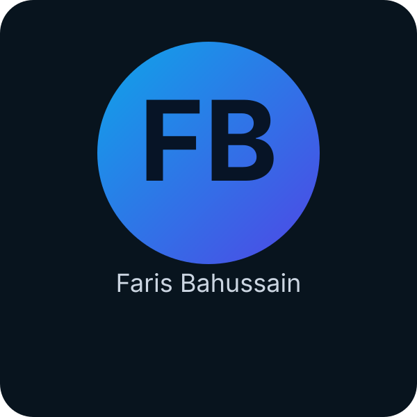

Robotic Dog Platform
Building a quadruped robot from concept to prototype using SolidWorks, servo selection, 3D printed parts, and mechanical motion planning. The goal is to add AI perception and autonomous behavior.

I am Faris Bahussain, a Mechanical Engineering student with a passion for robotics, intelligent systems, and innovative product design. My interests lie at the intersection of mechanical engineering and artificial intelligence, where I enjoy transforming creative ideas into practical, real-world solutions.
I am a Mechanical Engineering student passionate about robotics, intelligent systems, and innovative product design. I enjoy transforming creative ideas into practical solutions, and I have experience in CAD design, 3D printing, rapid prototyping, and mechanical system development. I have worked on projects that combine mechanical motion, actuator selection, and system-level integration, and I am constantly looking for ways to make designs more efficient, reliable, and user-friendly. Whether I am improving a mechanical assembly or learning new software tools, I aim to connect strong engineering fundamentals with creative problem-solving. I tackle complex engineering challenges with a balance of creativity, precision, and analytical thinking, and I believe continuous learning and innovation are the foundation of a successful engineering career.
Building a quadruped robot from concept to prototype using SolidWorks, servo selection, 3D printed parts, and mechanical motion planning. The goal is to add AI perception and autonomous behavior.
Improving print quality and reliability by upgrading hardware, calibrating slicer settings, and experimenting with new filament materials to achieve stronger, more accurate prototypes.
I combine mechanical engineering fundamentals with modern tools to develop robust systems. My technical strengths include CAD design, rapid prototyping, mechanical optimization, and an emerging focus on AI-enabled robotics.